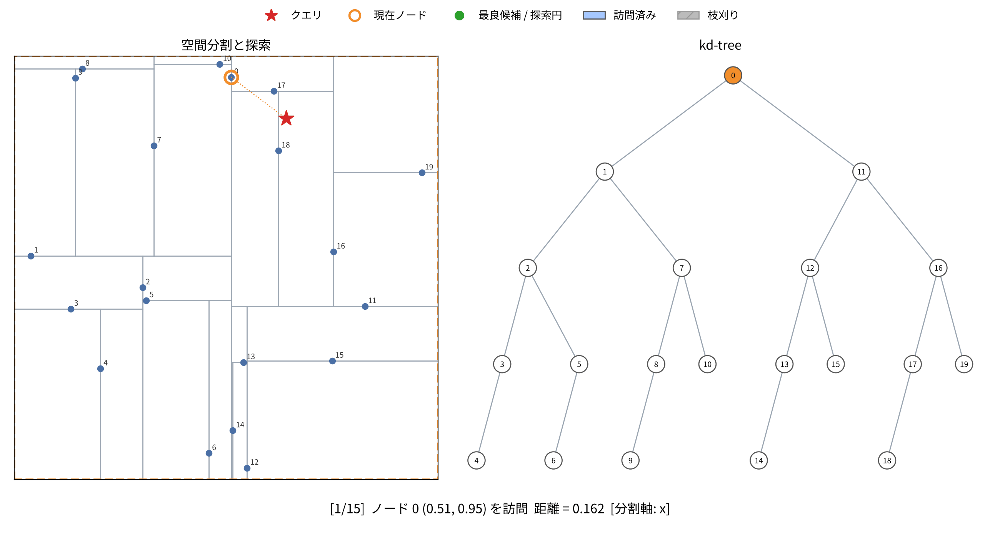

点群から kd-tree を構築し、クエリ点に最も近い点を探す過程をステップごとに可視化します。 近い側の部分木から降りて最良候補を更新し、戻る際に「分割線（面）までの距離 < 現在の最短距離」のときだけ反対側を探索、それ以外は枝刈りします。

実行例: python kdtree_nn_visualizer.py --seed 1 --save kdtree_nn_demo.gif（20 点）
ドラッグで回転、スクロールでズーム。下部のスライダー / 再生ボタンでステップを進めます。
実行例: python kdtree_nn_visualizer_3d.py --seed 2（25 点）。別タブで開く
pip install numpy matplotlib pillow plotly # 2D: ウィンドウ表示 / GIF 保存 python kdtree_nn_visualizer.py python kdtree_nn_visualizer.py -n 30 --seed 3 --query 0.3 0.7 --save out.gif # 3D: HTML を生成してブラウザで開く python kdtree_nn_visualizer_3d.py -n 40 --seed 3 --query 0.3 0.7 0.5
"""
kd-tree による最近傍探索の可視化
================================
2次元点群から kd-tree を構築し、クエリ点に対する最近傍探索の過程を
ステップごとにアニメーション表示します。
表示内容:
- 左: 空間分割 (分割線) と探索の様子
* 訪問中のノード (オレンジ)
* 現在の最良候補 (緑) と、その距離を半径とする探索円
* 枝刈りされた領域 (グレーの網掛け)
- 右: kd-tree の木構造 (訪問済み / 枝刈り / 現在ノードを色分け)
- 下: 各ステップの説明テキスト
使い方:
python kdtree_nn_visualizer.py # ウィンドウでアニメーション表示
python kdtree_nn_visualizer.py --save out.gif # GIF として保存
python kdtree_nn_visualizer.py -n 30 --seed 3 --query 0.3 0.7
必要ライブラリ: numpy, matplotlib (GIF 保存時は pillow)
"""
import argparse
from dataclasses import dataclass, field
import matplotlib.pyplot as plt
import numpy as np
from matplotlib.animation import FuncAnimation, PillowWriter
from matplotlib.patches import Circle, Rectangle
# 日本語フォントがあれば使う (無ければ英語表示でも動作します)
from matplotlib import font_manager as _fm
_available = {f.name for f in _fm.fontManager.ttflist}
for _f in ["Noto Sans CJK JP", "IPAexGothic", "IPAGothic", "Hiragino Sans", "Yu Gothic",
"Meiryo", "MS Gothic", "Noto Sans CJK SC", "Noto Sans CJK TC"]:
if _f in _available:
plt.rcParams["font.family"] = _f
break
# ----------------------------------------------------------------------
# kd-tree
# ----------------------------------------------------------------------
@dataclass
class Node:
point: np.ndarray
axis: int
bounds: tuple # (xmin, xmax, ymin, ymax) このノードが担当する領域
left: "Node" = None
right: "Node" = None
id: int = 0
depth: int = 0
# 木の描画用座標
tx: float = 0.0
ty: float = 0.0
def build_kdtree(points, depth=0, bounds=(0, 1, 0, 1), counter=None):
"""中央値で分割する標準的な kd-tree 構築"""
if counter is None:
counter = [0]
if len(points) == 0:
return None
axis = depth % 2
pts = points[points[:, axis].argsort()]
mid = len(pts) // 2
node = Node(point=pts[mid], axis=axis, bounds=bounds, id=counter[0], depth=depth)
counter[0] += 1
xmin, xmax, ymin, ymax = bounds
s = pts[mid][axis]
if axis == 0:
lb, rb = (xmin, s, ymin, ymax), (s, xmax, ymin, ymax)
else:
lb, rb = (xmin, xmax, ymin, s), (xmin, xmax, s, ymax)
node.left = build_kdtree(pts[:mid], depth + 1, lb, counter)
node.right = build_kdtree(pts[mid + 1:], depth + 1, rb, counter)
return node
def iter_nodes(node):
if node is None:
return
yield node
yield from iter_nodes(node.left)
yield from iter_nodes(node.right)
def layout_tree(root):
"""木を描画するための座標 (in-order で x、深さで y) を割り当てる"""
order = [0]
def rec(n):
if n is None:
return
rec(n.left)
n.tx = order[0]
order[0] += 1
n.ty = -n.depth
rec(n.right)
rec(root)
def rect_dist(q, bounds):
"""クエリ点から矩形領域までの最短距離 (枝刈り判定の補助表示用)"""
xmin, xmax, ymin, ymax = bounds
dx = max(xmin - q[0], 0, q[0] - xmax)
dy = max(ymin - q[1], 0, q[1] - ymax)
return np.hypot(dx, dy)
# ----------------------------------------------------------------------
# 最近傍探索 (各ステップを記録)
# ----------------------------------------------------------------------
@dataclass
class Step:
current: Node
best: Node
best_dist: float
visited: set
pruned: list # 枝刈りされたノード (部分木の根) のリスト
message: str
def nn_search_with_trace(root, q):
steps = []
state = {"best": None, "dist": np.inf}
visited, pruned = set(), []
def snap(cur, msg):
steps.append(Step(cur, state["best"], state["dist"],
set(visited), list(pruned), msg))
def search(node):
if node is None:
return
visited.add(node.id)
d = np.linalg.norm(node.point - q)
ax = "x" if node.axis == 0 else "y"
snap(node, f"ノード {node.id} ({node.point[0]:.2f}, {node.point[1]:.2f}) を訪問"
f" 距離 = {d:.3f} [分割軸: {ax}]")
if d < state["dist"]:
state["best"], state["dist"] = node, d
snap(node, f"最良候補を更新 → ノード {node.id} (最短距離 {d:.3f})")
diff = q[node.axis] - node.point[node.axis]
near, far = (node.left, node.right) if diff < 0 else (node.right, node.left)
side = "左/下" if diff < 0 else "右/上"
if near is not None:
snap(node, f"クエリは分割線の{side}側 → 近い側の部分木へ降りる")
search(near)
if far is None:
return
if abs(diff) < state["dist"]:
snap(node, f"戻り: 分割線までの距離 {abs(diff):.3f} < 最短距離 {state['dist']:.3f}"
f" → 反対側も探索")
search(far)
else:
pruned.append(far)
snap(node, f"戻り: 分割線までの距離 {abs(diff):.3f} ≥ 最短距離 {state['dist']:.3f}"
f" → 反対側を枝刈り")
search(root)
snap(None, f"探索終了: 最近傍はノード {state['best'].id} "
f"({state['best'].point[0]:.2f}, {state['best'].point[1]:.2f})、"
f"距離 {state['dist']:.3f} / 訪問 {len(visited)} ノード")
return steps
# ----------------------------------------------------------------------
# 可視化
# ----------------------------------------------------------------------
C_POINT = "#4a6fa5"
C_SPLIT = "#9aa5b1"
C_CUR = "#f28e2b"
C_BEST = "#2ca02c"
C_QUERY = "#d62728"
C_PRUNE = "#bbbbbb"
def draw_static(ax_space, ax_tree, root, q, all_nodes):
# --- 空間: 分割線 ---
for n in all_nodes:
xmin, xmax, ymin, ymax = n.bounds
if n.axis == 0:
ax_space.plot([n.point[0]] * 2, [ymin, ymax], color=C_SPLIT, lw=1, zorder=1)
else:
ax_space.plot([xmin, xmax], [n.point[1]] * 2, color=C_SPLIT, lw=1, zorder=1)
pts = np.array([n.point for n in all_nodes])
ax_space.scatter(pts[:, 0], pts[:, 1], s=28, color=C_POINT, zorder=3)
for n in all_nodes:
ax_space.annotate(str(n.id), n.point, xytext=(3, 3), textcoords="offset points",
fontsize=7, color="#333")
ax_space.scatter(*q, marker="*", s=220, color=C_QUERY, zorder=6, label="クエリ")
ax_space.set_xlim(0, 1)
ax_space.set_ylim(0, 1)
ax_space.set_aspect("equal")
ax_space.set_title("空間分割と探索")
ax_space.set_xticks([])
ax_space.set_yticks([])
# --- 木構造: エッジ ---
for n in all_nodes:
for c in (n.left, n.right):
if c is not None:
ax_tree.plot([n.tx, c.tx], [n.ty, c.ty], color=C_SPLIT, lw=1, zorder=1)
ax_tree.set_title("kd-tree")
ax_tree.axis("off")
def make_animation(root, q, steps, interval=900):
all_nodes = list(iter_nodes(root))
layout_tree(root)
fig = plt.figure(figsize=(13, 7))
gs = fig.add_gridspec(2, 2, height_ratios=[12, 1], width_ratios=[1, 1.25])
ax_space = fig.add_subplot(gs[0, 0])
ax_tree = fig.add_subplot(gs[0, 1])
ax_text = fig.add_subplot(gs[1, :])
ax_text.axis("off")
draw_static(ax_space, ax_tree, root, q, all_nodes)
# 木のノード (色を毎フレーム更新)
tree_scatter = ax_tree.scatter([n.tx for n in all_nodes], [n.ty for n in all_nodes],
s=260, color="white", edgecolor="#555", zorder=3)
for n in all_nodes:
ax_tree.text(n.tx, n.ty, str(n.id), ha="center", va="center", fontsize=7, zorder=4)
id_to_idx = {n.id: i for i, n in enumerate(all_nodes)}
def subtree_ids(n):
return {m.id for m in iter_nodes(n)}
dynamic = []
text = ax_text.text(0.5, 0.5, "", ha="center", va="center", fontsize=12)
def update(i):
for art in dynamic:
art.remove()
dynamic.clear()
st = steps[i]
# 枝刈りされた領域
pruned_ids = set()
for p in st.pruned:
xmin, xmax, ymin, ymax = p.bounds
r = Rectangle((xmin, ymin), xmax - xmin, ymax - ymin, facecolor=C_PRUNE,
alpha=0.35, hatch="//", edgecolor="#999", lw=0, zorder=0)
ax_space.add_patch(r)
dynamic.append(r)
pruned_ids |= subtree_ids(p)
# 現在ノードの担当領域と分割線
if st.current is not None:
xmin, xmax, ymin, ymax = st.current.bounds
r = Rectangle((xmin, ymin), xmax - xmin, ymax - ymin, fill=False,
edgecolor=C_CUR, lw=2, ls="--", zorder=2)
ax_space.add_patch(r)
dynamic.append(r)
dynamic.extend(ax_space.plot(*st.current.point, "o", ms=12, mfc="none",
mec=C_CUR, mew=2.5, zorder=5))
dynamic.extend(ax_space.plot([q[0], st.current.point[0]], [q[1], st.current.point[1]],
color=C_CUR, lw=1, ls=":", zorder=4))
# 最良候補と探索円
if st.best is not None:
c = Circle(q, st.best_dist, fill=False, edgecolor=C_BEST, lw=1.8, zorder=4)
ax_space.add_patch(c)
dynamic.append(c)
dynamic.extend(ax_space.plot(*st.best.point, "o", ms=9, color=C_BEST, zorder=5))
dynamic.extend(ax_space.plot([q[0], st.best.point[0]], [q[1], st.best.point[1]],
color=C_BEST, lw=1.5, zorder=4))
# 木のノード色
colors = []
for n in all_nodes:
if st.current is not None and n.id == st.current.id:
colors.append(C_CUR)
elif st.best is not None and n.id == st.best.id:
colors.append(C_BEST)
elif n.id in pruned_ids:
colors.append(C_PRUNE)
elif n.id in st.visited:
colors.append("#a6c8ff")
else:
colors.append("white")
tree_scatter.set_facecolor(colors)
text.set_text(f"[{i + 1}/{len(steps)}] {st.message}")
return dynamic + [tree_scatter, text]
# 凡例
from matplotlib.lines import Line2D
from matplotlib.patches import Patch
handles = [
Line2D([], [], marker="*", color=C_QUERY, ls="", ms=12, label="クエリ"),
Line2D([], [], marker="o", mec=C_CUR, mfc="none", ls="", ms=10, mew=2, label="現在ノード"),
Line2D([], [], marker="o", color=C_BEST, ls="", ms=8, label="最良候補 / 探索円"),
Patch(facecolor="#a6c8ff", edgecolor="#555", label="訪問済み"),
Patch(facecolor=C_PRUNE, edgecolor="#999", hatch="//", label="枝刈り"),
]
fig.legend(handles=handles, loc="upper center", ncol=5, frameon=False, fontsize=10)
fig.tight_layout(rect=(0, 0, 1, 0.95))
anim = FuncAnimation(fig, update, frames=len(steps), interval=interval,
blit=False, repeat=True)
return fig, anim
# ----------------------------------------------------------------------
def main():
ap = argparse.ArgumentParser(description="kd-tree 最近傍探索の可視化")
ap.add_argument("-n", "--num-points", type=int, default=20, help="点の数")
ap.add_argument("--seed", type=int, default=0, help="乱数シード")
ap.add_argument("--query", type=float, nargs=2, default=None, help="クエリ点 (x y)")
ap.add_argument("--interval", type=int, default=900, help="フレーム間隔 [ms]")
ap.add_argument("--save", type=str, default=None, help="GIF の保存先 (例: out.gif)")
args = ap.parse_args()
rng = np.random.default_rng(args.seed)
points = rng.random((args.num_points, 2))
q = np.array(args.query) if args.query else rng.random(2)
root = build_kdtree(points)
steps = nn_search_with_trace(root, q)
# 総当たりで結果を検証
brute = points[np.argmin(np.linalg.norm(points - q, axis=1))]
assert np.allclose(brute, steps[-1].best.point), "kd-tree の結果が総当たりと一致しません"
print(steps[-1].message)
fig, anim = make_animation(root, q, steps, args.interval)
if args.save:
anim.save(args.save, writer=PillowWriter(fps=max(1, 1000 // args.interval)))
print(f"保存しました: {args.save}")
else:
plt.show()
if __name__ == "__main__":
main()
"""
kd-tree による最近傍探索の 3D 可視化 (Plotly)
==============================================
3次元点群から kd-tree を構築し、最近傍探索の過程を
マウスで回転・ズームできる 3D 表示で確認できます。
ブラウザで開く HTML を出力し、スライダー / 再生ボタンでステップを進めます。
表示内容:
- 左 (3D): 分割平面 (x=赤, y=緑, z=青 の半透明面)
* 現在ノードの担当領域 (オレンジの箱) と分割平面 (オレンジの面)
* 最良候補 (緑) と、その距離を半径とする探索球
* 枝刈りされた領域 (グレーの半透明ボックス)
- 右: kd-tree の木構造 (現在 / 最良 / 訪問済み / 枝刈り を色分け)
- 上部タイトル: 各ステップの説明
使い方:
python kdtree_nn_visualizer_3d.py # HTML を作ってブラウザで開く
python kdtree_nn_visualizer_3d.py -n 40 --seed 3 --query 0.3 0.7 0.5
python kdtree_nn_visualizer_3d.py --out result.html --no-open
必要ライブラリ: numpy, plotly
"""
import argparse
import webbrowser
from dataclasses import dataclass
from pathlib import Path
import numpy as np
import plotly.graph_objects as go
from plotly.subplots import make_subplots
K = 3
AXIS_NAME = "xyz"
AXIS_COLOR = ["#e15759", "#59a14f", "#4e79a7"] # x, y, z の分割平面の色
C_CUR, C_BEST, C_QUERY, C_VISITED, C_PRUNE = "#f28e2b", "#2ca02c", "#d62728", "#a6c8ff", "#bbbbbb"
# ----------------------------------------------------------------------
# kd-tree
# ----------------------------------------------------------------------
@dataclass
class Node:
point: np.ndarray
axis: int
lo: np.ndarray # 担当領域の下限 (k 次元)
hi: np.ndarray # 担当領域の上限
left: "Node" = None
right: "Node" = None
id: int = 0
depth: int = 0
tx: float = 0.0
ty: float = 0.0
def build_kdtree(points, depth=0, lo=None, hi=None, counter=None):
k = points.shape[1] if len(points) else K
lo = np.zeros(k) if lo is None else lo
hi = np.ones(k) if hi is None else hi
counter = [0] if counter is None else counter
if len(points) == 0:
return None
axis = depth % k
pts = points[points[:, axis].argsort()]
mid = len(pts) // 2
node = Node(pts[mid], axis, lo, hi, id=counter[0], depth=depth)
counter[0] += 1
s = pts[mid][axis]
hi_l, lo_r = hi.copy(), lo.copy()
hi_l[axis], lo_r[axis] = s, s
node.left = build_kdtree(pts[:mid], depth + 1, lo, hi_l, counter)
node.right = build_kdtree(pts[mid + 1:], depth + 1, lo_r, hi, counter)
return node
def iter_nodes(node):
if node is None:
return
yield node
yield from iter_nodes(node.left)
yield from iter_nodes(node.right)
def layout_tree(root):
order = [0]
def rec(n):
if n is None:
return
rec(n.left)
n.tx, n.ty = order[0], -n.depth
order[0] += 1
rec(n.right)
rec(root)
# ----------------------------------------------------------------------
# 最近傍探索 (各ステップを記録)
# ----------------------------------------------------------------------
@dataclass
class Step:
current: Node
best: Node
best_dist: float
visited: set
pruned: list
message: str
def nn_search_with_trace(root, q):
steps, visited, pruned = [], set(), []
st = {"best": None, "dist": np.inf}
def snap(cur, msg):
steps.append(Step(cur, st["best"], st["dist"], set(visited), list(pruned), msg))
def search(node):
if node is None:
return
visited.add(node.id)
d = np.linalg.norm(node.point - q)
p = ", ".join(f"{v:.2f}" for v in node.point)
snap(node, f"ノード {node.id} ({p}) を訪問 距離 = {d:.3f} [分割軸: {AXIS_NAME[node.axis]}]")
if d < st["dist"]:
st["best"], st["dist"] = node, d
snap(node, f"最良候補を更新 → ノード {node.id} (最短距離 {d:.3f})")
diff = q[node.axis] - node.point[node.axis]
near, far = (node.left, node.right) if diff < 0 else (node.right, node.left)
if near is not None:
side = "小さい" if diff < 0 else "大きい"
snap(node, f"クエリは {AXIS_NAME[node.axis]} が{side}側 → 近い側の部分木へ降りる")
search(near)
if far is None:
return
if abs(diff) < st["dist"]:
snap(node, f"戻り: 分割平面までの距離 {abs(diff):.3f} < 最短距離 {st['dist']:.3f} → 反対側も探索")
search(far)
else:
pruned.append(far)
snap(node, f"戻り: 分割平面までの距離 {abs(diff):.3f} ≥ 最短距離 {st['dist']:.3f} → 反対側を枝刈り")
search(root)
b = st["best"]
snap(None, f"探索終了: 最近傍はノード {b.id} ({', '.join(f'{v:.2f}' for v in b.point)})、"
f"距離 {st['dist']:.3f} / 訪問 {len(visited)} ノード")
return steps
# ----------------------------------------------------------------------
# 3D 図形ヘルパー
# ----------------------------------------------------------------------
def plane_quad(node):
"""ノードの分割平面 (担当領域内) の 4 頂点"""
a = node.axis
b, c = [i for i in range(K) if i != a]
corners = []
for ub, uc in [(0, 0), (1, 0), (1, 1), (0, 1)]:
v = np.empty(K)
v[a] = node.point[a]
v[b] = node.hi[b] if ub else node.lo[b]
v[c] = node.hi[c] if uc else node.lo[c]
corners.append(v)
return np.array(corners)
def quads_to_mesh(quads):
"""四角形のリスト → Mesh3d 用 (x, y, z, i, j, k)"""
xs, ys, zs, I, J, Kk = [], [], [], [], [], []
for q in quads:
base = len(xs)
xs += list(q[:, 0]); ys += list(q[:, 1]); zs += list(q[:, 2])
I += [base, base]; J += [base + 1, base + 2]; Kk += [base + 2, base + 3]
return xs, ys, zs, I, J, Kk
def box_quads(lo, hi):
"""直方体の 6 面"""
quads = []
for a in range(K):
b, c = [i for i in range(K) if i != a]
for val in (lo[a], hi[a]):
corners = []
for ub, uc in [(0, 0), (1, 0), (1, 1), (0, 1)]:
v = np.empty(K)
v[a] = val
v[b] = hi[b] if ub else lo[b]
v[c] = hi[c] if uc else lo[c]
corners.append(v)
quads.append(np.array(corners))
return quads
def box_edges(lo, hi):
"""直方体の 12 辺 (None 区切りの線分列)"""
xs, ys, zs = [], [], []
c = [(x, y, z) for x in (lo[0], hi[0]) for y in (lo[1], hi[1]) for z in (lo[2], hi[2])]
for i in range(8):
for j in range(i + 1, 8):
if sum(c[i][t] != c[j][t] for t in range(3)) == 1:
xs += [c[i][0], c[j][0], None]; ys += [c[i][1], c[j][1], None]; zs += [c[i][2], c[j][2], None]
return xs, ys, zs
def sphere(center, r, n=24):
u, v = np.meshgrid(np.linspace(0, 2 * np.pi, n), np.linspace(0, np.pi, n))
return (center[0] + r * np.cos(u) * np.sin(v),
center[1] + r * np.sin(u) * np.sin(v),
center[2] + r * np.cos(v))
# ----------------------------------------------------------------------
# 可視化
# ----------------------------------------------------------------------
def build_figure(root, q, steps):
nodes = list(iter_nodes(root))
layout_tree(root)
pts = np.array([n.point for n in nodes])
fig = make_subplots(rows=1, cols=2, column_widths=[0.62, 0.38],
specs=[[{"type": "scene"}, {"type": "xy"}]],
subplot_titles=("3D 空間分割と探索", "kd-tree"))
# ---------- 静的トレース ----------
for a in range(K):
quads = [plane_quad(n) for n in nodes if n.axis == a]
if quads:
x, y, z, i, j, k = quads_to_mesh(quads)
fig.add_trace(go.Mesh3d(x=x, y=y, z=z, i=i, j=j, k=k, color=AXIS_COLOR[a],
opacity=0.12, name=f"分割平面 ({AXIS_NAME[a]})",
showlegend=True, hoverinfo="skip"), 1, 1)
fig.add_trace(go.Scatter3d(x=pts[:, 0], y=pts[:, 1], z=pts[:, 2], mode="markers+text",
marker=dict(size=4, color="#4a6fa5"),
text=[str(n.id) for n in nodes], textfont=dict(size=10),
textposition="top center", name="データ点",
hovertemplate="ノード %{text}<br>(%{x:.2f}, %{y:.2f}, %{z:.2f})<extra></extra>"), 1, 1)
fig.add_trace(go.Scatter3d(x=[q[0]], y=[q[1]], z=[q[2]], mode="markers",
marker=dict(size=7, color=C_QUERY, symbol="diamond"),
name="クエリ"), 1, 1)
ex, ey = [], []
for n in nodes:
for c in (n.left, n.right):
if c is not None:
ex += [n.tx, c.tx, None]; ey += [n.ty, c.ty, None]
fig.add_trace(go.Scatter(x=ex, y=ey, mode="lines", line=dict(color="#9aa5b1", width=1),
hoverinfo="skip", showlegend=False), 1, 2)
# ---------- 動的トレース (フレームごとに更新) ----------
dyn_start = len(fig.data)
def dynamic_traces(st):
out = []
# 1) 枝刈り領域
quads = [qd for p in st.pruned for qd in box_quads(p.lo, p.hi)]
x, y, z, i, j, k = quads_to_mesh(quads) if quads else ([], [], [], [], [], [])
out.append(go.Mesh3d(x=x, y=y, z=z, i=i, j=j, k=k, color="#888888", opacity=0.3,
name="枝刈り領域", showlegend=True, hoverinfo="skip"))
# 2) 現在ノードの担当領域 (箱の辺)
cur = st.current
bx, by, bz = box_edges(cur.lo, cur.hi) if cur else ([], [], [])
out.append(go.Scatter3d(x=bx, y=by, z=bz, mode="lines", line=dict(color=C_CUR, width=4),
name="現在ノードの領域", showlegend=True, hoverinfo="skip"))
# 3) 現在ノードの分割平面
if cur:
x, y, z, i, j, k = quads_to_mesh([plane_quad(cur)])
else:
x, y, z, i, j, k = [], [], [], [], [], []
out.append(go.Mesh3d(x=x, y=y, z=z, i=i, j=j, k=k, color=C_CUR, opacity=0.45,
showlegend=False, hoverinfo="skip"))
# 4) 現在ノード + クエリへの線
cx = [cur.point[0], q[0]] if cur else []
cy = [cur.point[1], q[1]] if cur else []
cz = [cur.point[2], q[2]] if cur else []
out.append(go.Scatter3d(x=cx, y=cy, z=cz, mode="lines+markers",
line=dict(color=C_CUR, width=3, dash="dot"),
marker=dict(size=[9, 0], color=C_CUR), showlegend=False, hoverinfo="skip"))
# 5) 探索球
r = st.best_dist if st.best else 0.0
sx, sy, sz = sphere(q, r)
out.append(go.Surface(x=sx, y=sy, z=sz, opacity=0.18 if st.best else 0,
colorscale=[[0, C_BEST], [1, C_BEST]], showscale=False,
name="探索球 (半径 = 最短距離)", showlegend=True,
hoverinfo="skip"))
# 6) 最良候補 + クエリへの線
b = st.best
out.append(go.Scatter3d(x=[b.point[0], q[0]] if b else [], y=[b.point[1], q[1]] if b else [],
z=[b.point[2], q[2]] if b else [], mode="lines+markers",
line=dict(color=C_BEST, width=5),
marker=dict(size=[8, 0], color=C_BEST), name="最良候補", showlegend=True,
hoverinfo="skip"))
# 7) 木のノード
pruned_ids = {m.id for p in st.pruned for m in iter_nodes(p)}
colors = []
for n in nodes:
if cur is not None and n.id == cur.id:
colors.append(C_CUR)
elif b is not None and n.id == b.id:
colors.append(C_BEST)
elif n.id in pruned_ids:
colors.append(C_PRUNE)
elif n.id in st.visited:
colors.append(C_VISITED)
else:
colors.append("white")
out.append(go.Scatter(x=[n.tx for n in nodes], y=[n.ty for n in nodes], mode="markers+text",
marker=dict(size=20, color=colors, line=dict(color="#555", width=1)),
text=[str(n.id) for n in nodes], textfont=dict(size=9),
customdata=[AXIS_NAME[n.axis] for n in nodes],
hovertemplate="ノード %{text} 分割軸: %{customdata}<extra></extra>",
showlegend=False))
return out
for i, tr in enumerate(dynamic_traces(steps[0])):
fig.add_trace(tr, 1, 1 if i < 6 else 2)
dyn_idx = list(range(dyn_start, len(fig.data)))
def title(i):
return f"[{i + 1}/{len(steps)}] {steps[i].message}"
fig.frames = [go.Frame(data=dynamic_traces(st), traces=dyn_idx, name=str(i),
layout=go.Layout(title_text=title(i)))
for i, st in enumerate(steps)]
# ---------- レイアウト / コントロール ----------
rng = dict(range=[0, 1])
fig.update_layout(
title=dict(text=title(0), x=0.5, y=0.985, yanchor="top", font=dict(size=15)),
height=820, width=1400, margin=dict(l=10, r=10, t=120, b=110), plot_bgcolor="white",
scene=dict(xaxis=dict(title="x", **rng), yaxis=dict(title="y", **rng),
zaxis=dict(title="z", **rng), aspectmode="cube",
camera=dict(eye=dict(x=1.6, y=-1.6, z=1.1))),
legend=dict(orientation="h", x=0, y=1.05, yanchor="bottom"),
updatemenus=[dict(type="buttons", x=0.0, y=-0.03, yanchor="top", xanchor="left", direction="left", buttons=[
dict(label="▶ 再生", method="animate",
args=[None, dict(frame=dict(duration=1000, redraw=True), fromcurrent=True,
transition=dict(duration=0))]),
dict(label="⏸ 停止", method="animate",
args=[[None], dict(frame=dict(duration=0, redraw=False), mode="immediate")]),
])],
sliders=[dict(active=0, x=0.13, y=-0.02, yanchor="top", len=0.87,
currentvalue=dict(prefix="ステップ ", font=dict(size=12)), pad=dict(t=0, b=0),
steps=[dict(label=str(i + 1), method="animate",
args=[[str(i)], dict(mode="immediate", frame=dict(duration=0, redraw=True),
transition=dict(duration=0))])
for i in range(len(steps))])],
)
fig.update_xaxes(visible=False, row=1, col=2)
fig.update_yaxes(visible=False, row=1, col=2)
return fig
def main():
ap = argparse.ArgumentParser(description="kd-tree 最近傍探索の 3D 可視化")
ap.add_argument("-n", "--num-points", type=int, default=25)
ap.add_argument("--seed", type=int, default=0)
ap.add_argument("--query", type=float, nargs=3, default=None, help="クエリ点 (x y z)")
ap.add_argument("--out", type=str, default="kdtree_nn_3d.html")
ap.add_argument("--no-open", action="store_true", help="ブラウザを自動で開かない")
args = ap.parse_args()
rng = np.random.default_rng(args.seed)
points = rng.random((args.num_points, K))
q = np.array(args.query) if args.query else rng.random(K)
root = build_kdtree(points)
steps = nn_search_with_trace(root, q)
brute = points[np.argmin(np.linalg.norm(points - q, axis=1))]
assert np.allclose(brute, steps[-1].best.point), "kd-tree の結果が総当たりと一致しません"
print(steps[-1].message)
fig = build_figure(root, q, steps)
fig.write_html(args.out, include_plotlyjs="cdn", auto_play=False)
print(f"保存しました: {args.out}")
if not args.no_open:
webbrowser.open(Path(args.out).resolve().as_uri())
if __name__ == "__main__":
main()